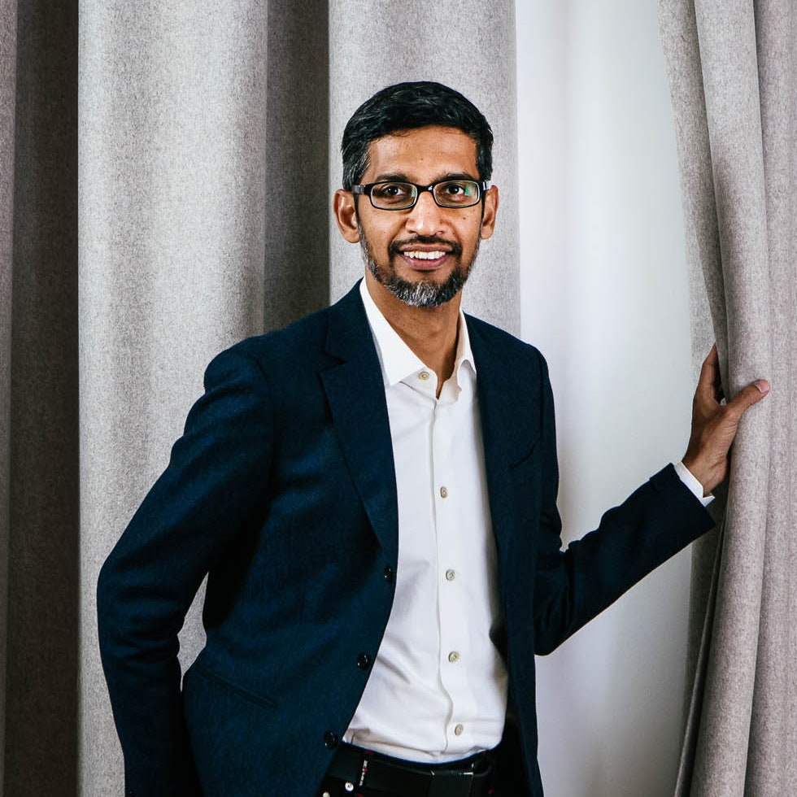

The CEO of oogle

Sundararajan Pichai
June 10, 1972
Who is Sundar Pichai
Sundar Pichai was born in Chennai, Tamil Nadu, India, on June 10, 1972. Pichai's full name is Pichai Sundararajan. He is a prominent business leader best known as Google Inc.'s Chief Executive Officer (CEO) and also the CEO of Alphabet Inc., the firm's parent corporation.
Family Background of Sundar Pichai
Sundar Pichai's parents names are Regunatha Pichai and Lakshmi Pichai. He graduated from Jawahar Vidyalaya (Jawahar Navodaya Vidyalaya) and the Indian Institute of Technology Kharagpur. On December 19, 2003, he married Anjali Pichai. He has two children, Kiran Pichai and Kavya Pichai.
Awards and Recognition
- He began working at Google in 2004, and by August 2007, he had been promoted to Vice President, Product Management.
- He is also a co-founder of the open source microblogging application Jaiku.
- Forbes named him one of the most powerful individuals in business in 2017.
- Pichai was awarded the Padma Bhushan by the Government of India in 2022, the country's third-highest civilian honour.